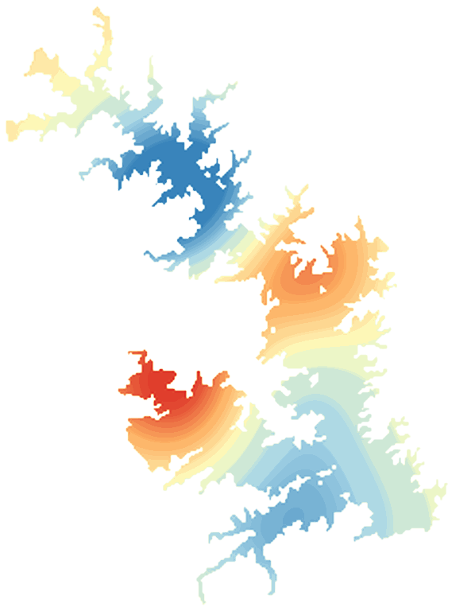

LakeScope › GA
Lake Thurmond (Clarks Hill) today
Updated 2026-11-26 - Atlas Labs
Clear water, 51°F water, level falling, 8 ft below normal, windy Thursday (17 mph W).
Water level
316.89 ft
USGS gauge 02193900 - 2026-11-26
7-day trend: falling (-0.53 ft). Compared with normal for this date: -7.7 ft (same weeks, 2016-2025).
Water clarity and algae
Clear water Last clear view: about a week ago.
Surface temperature
51°F
seen from space on 2026-11-23

Weather, next 3 days
| Day | Sky | High / low | Wind | Rain |
|---|---|---|---|---|
| Thursday | Light Rain Likely then Mostly Cloudy | 55 / 41°F | 17 mph W | 56% |
| Friday | Mostly Cloudy | 52 / 41°F | 17 mph W | 1% |
| Saturday | Sunny | 60 / 43°F | 7 mph W | 0% |
Sunrise 07:11 - sunset 17:21 - Full moon. National Weather Service.
Get the LakeScope app: alerts and the 3-D view of Lake Thurmond (Clarks Hill)